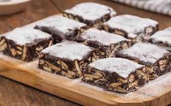

Palha italiana de Brigadeiro
postado em 08 de junho de 2024 Ingredientes: 1 lata de leite condensado. Uma colher de sopa de margarina ou manteiga. 1 pacote de bolacha maizena. 50g de achocolatado em pó. Modo de preparo: unte uma forma com margarina e reserve. Pique a bolacha maizena em pedaço de tamanho da sua preferência. Depois em uma panela coloque o leite condensado, a margarina e o achocolatado e ligue o fogo médio. Mexa sem parar até dar o ponto de brigadeiro (aparecer o fundo da panela) e depois acresente a bolacha e misture bem. Depois despeje na forma e leve na geladeira por 30 minutos. Está pronto
Leia maisPalha italiana de Leite Ninho
postado em 08 de junho de 2024Uma colher de sopa de margarina ou manteiga. 1 pacote de bolacha maizena. 100g de leite em pó. Modo de preparo: unte uma forma com margarina e reserve. Pique a bolacha maizena em pedaço de tamanho da sua preferência. Depois em uma panela coloque o leite condensado, a margarina e o leite em pó e ligue o fogo médio. Mexa sem parar até dar o ponto de brigadeiro (aparecer o fundo da panela) e depois acresente a bolacha e misture bem. Depois despeje na forma e leve na geladeira por 30 minutos. Está pronto
Leia mais